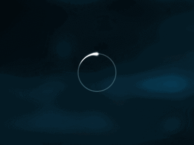

一、Maven有哪些优点和缺点？
优点
- 简化了项目依赖管理；
- 易于上手，对于新手可能一个
mvn clean package命令就可能满足他的工作； - 便于与持续集成工具（jenkins）整合；
- 便于项目升级，无论是项目本身升级还是项目使用的依赖升级；
- 有助于多模块项目的开发，一个模块开发好后，发布到仓库，依赖该模块时可以直接从仓库更新，而不用自己去编译；
- maven有很多插件，便于功能扩展，比如生产站点，自动发布版本等。
缺点
- maven是一个庞大的构建系统，学习难度较大；
- maven采用约定优于配置的策略（convention over configuration），虽然上手容易，但是一旦出了问题，难于调试；
- 当依赖很多时，编辑器会很卡；
- 中国的网络环境差，很多repository无法访问，比如google code， jboss 仓库无法访问等，但是大多数仓库可使用国内镜像解决。
二、Maven坐标？
一般maven使用[groupID，artifactId，version，packaging]来表示一个项目的某个版本，有时还会使用classifier来表示项目的附属构建，常见的附属构建有javadoc和sources包。
三、Maven常见的依赖范围有哪些?
- compile：编译依赖，默认的依赖方式，在编译（编译项目和编译测试用例），运行测试用例，运行（项目实际运行）三个阶段都有效，典型地有spring-core等jar；
- test：测试依赖，只在编译测试用例和运行测试用例有效，典型地有JUnit；
- provided：对于编译和测试有效，不会打包进发布包中，典型的例子为servlet-api，一般的web工程运行时都使用容器的servlet-api；
- runtime：只在运行测试用例和实际运行时有效，典型地是jdbc驱动jar包；
- system：不从maven仓库获取该jar，而是通过systemPath指定该jar的路径；
- import：用于一个dependencyManagement对另一个dependencyManagement的继承。
四、Maven的生命周期？
maven有三套生命周期，分别为：
clean 周期
主要用于清理上一次构建产生的文件，可以理解为删除 target 目录。
默认周期
主要阶段包含:
- process-resources 默认处理src/test/resources/下的文件，将其输出到测试的classpath目录中；
- compile 编译src/main/java下的java文件，产生对应的class；
- process-test-resources 默认处理src/test/resources/下的文件，将其输出到测试的classpath目录中；
- test-compile 编译src/test/java下的java文件，产生对应的class；
- test 运行测试用例；
- package 打包构件，即生成对应的jar, war等；
- install将构件部署到本地仓库；
- deploy 部署构件到远程仓库。
site周期
主要阶段包含
- site 产生项目的站点文档；
- site-deploy 将项目的站点文档部署到服务器。
五、我们经常使用“Mvn Clean Package”命令进行项目打包，请问该命令执行了哪些动作来完成该任务？
在这个命令中我们调用了maven的clean周期的clean阶段绑定的插件任务，以及default周期的package阶段绑定的插件任务
默认执行的任务有（maven的术语叫goal, 也有人翻译成目标，我这里用任务）：
- maven-clean-plugin:clean->
- maven-resources-plugin:resources->
- maven-compile-plugin:compile->
- mavne-resources-plugin:testResources->
- maven-compile-plugin:testCompile->
- maven-jar-plugin:jar
六、依赖的解析机制？
- 解析发布版本：如果本地有，直接使用本地的，没有就向远程仓库请求。
- 解析快照版本：合并本地和远程仓库的元数据文件-groupId/artifactId/version/maven-metadata.xml，这个文件存的版本都是带时间戳的，将最新的一个改名为不带时间戳的格式供本次编译使用。
- 解析版本为LATEST,RELEASE，过于复杂，且解析的结果不稳定， 不推荐在项目中使用，感兴趣的同学自己去研究，简而言之就是合并groupId/artifactId/maven-metadata.xml找到对应的最新版本和包含快照的最新版本。
七、插件的解析机制？
当我们输入mvn dependency:tree这样的指令，解析的步骤为：
解析groupID:
maven使用默认的groupID:”org.apache.maven.plugins”或者”org.codehaus.mojo”
解析artifactId(maven的官方叫做插件前缀解析策略)
合并该groupId在所有仓库中的元数据库文件（maven-metadata-repository.xml），比如maven官方插件的元数据文件所在的目录为org\apache\maven\plugins，该文件下有如下的条目
<plugin>
<name>Maven Dependency Plugin</name>
<prefix>dependency</prefix>
<artifactId>maven-dependency-plugin</artifactId>
</plugin>通过比较这样的条目，我们就将该命令的artifactId解析为maven-dependency-plugin
解析version，如果你在项目的pom中声明了该插件的版本，那么直接使用该版本的插件，否则合并所有仓库中groupId/artifactId/maven-metadata-repository.xml，找到最新的发布版本。
对于非官方的插件，有如下两个方法可以选择：
1）使用groupId:artifactId:version:goal 来运行；
2）在Settings.xml中添加pluginGroup项，这样maven不能在官方的插件库中解析到某个插件，那么就可以去你配置的group下查找。
八、多模块如何聚合？
配置一个打包类型为pom的聚合模块，然后在该pom中使用<moudle>元素声明要聚合的模块。
九、对于一个多模块项目，如果管理项目依赖的版本？
通过在父模块中声明 dependencyManagement 和 pluginManagement， 然后让子模块通过<parent>元素指定父模块，这样子模块在定义依赖是就可以只定义 groupId 和 artifactId，自动使用父模块的 version,这样统一整个项目的依赖的版本。
十、一个项目的依赖来源于不同的组织，可能这些依赖还会依赖别的Jar包，如何保证这些传递依赖不会引起版本冲突？
使用<dependency>的<exclusion>元素将会引起冲突的元素排除。
十一、常见的Maven私服的仓库类型？
（宿主仓库）hosted repository, （代理仓库）proxy repository, （仓库组）group repository
十二、如何查询一个插件有哪些目标（Goal）？
mvn help:describe -Dplugin=groupId:artifactId
关注微信公众号:【皮卡战记】
